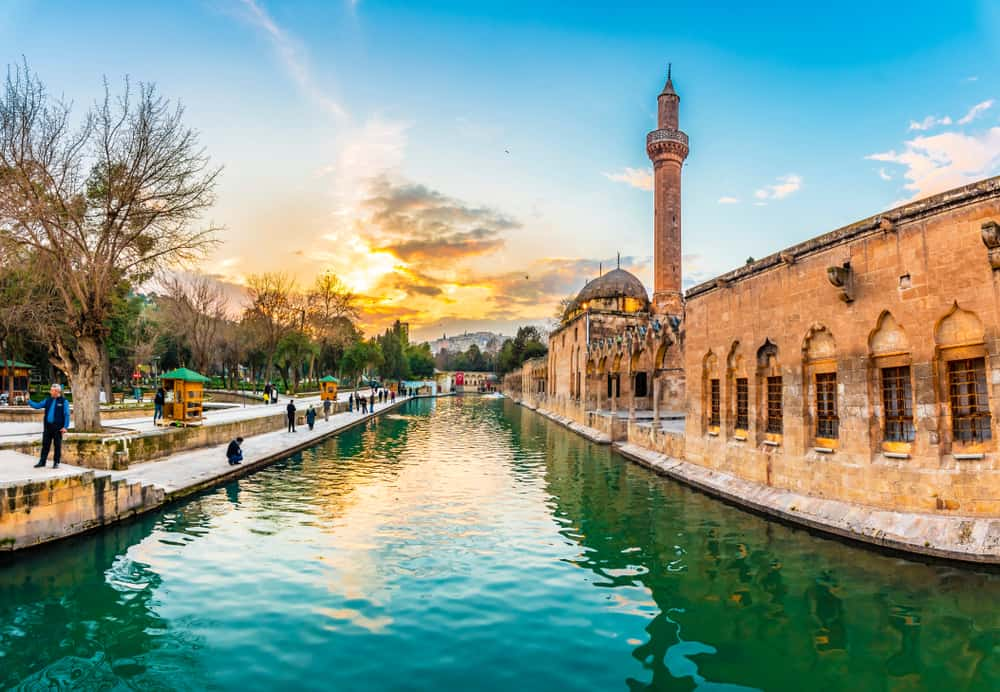
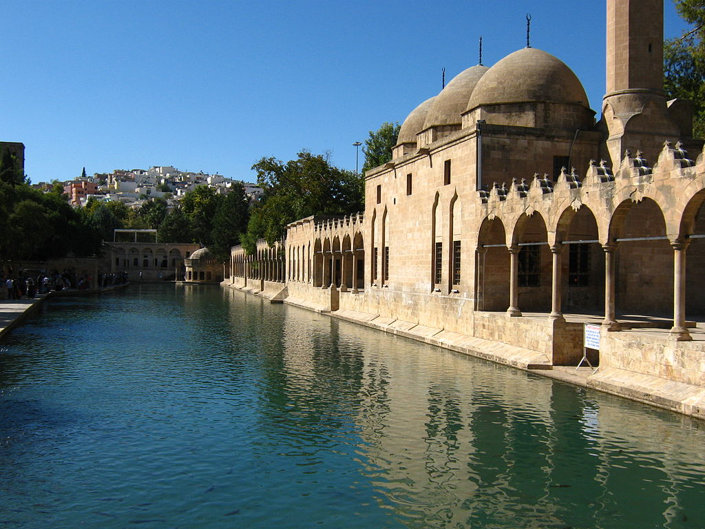
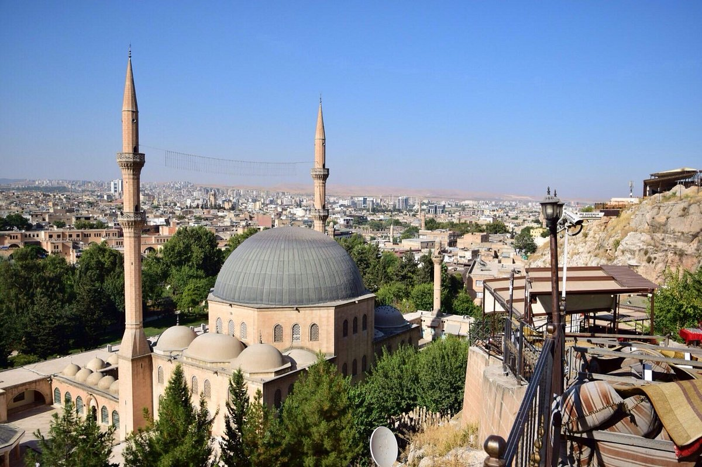

Şanlıurfa Hakkında
Şanlıurfa, Göbeklitepe gibi tarihi alanları ve eşsiz yemek kültürüyle ünlüdür. Balıklıgöl, şehrin tarihi zenginlikleri ve dini anlam taşıyan önemli yerlerinden biridir.
Şanlıurfa'da Ziyaret Edilmesi Gereken Başlıca Yerler:
- Göbeklitepe: Dünyanın bilinen en eski tapınak kompleksi olan Göbeklitepe, tarih öncesi çağlara ışık tutan bir alan olarak büyük öneme sahiptir.
- Balıklıgöl: İslam mitolojisinde önemli bir yer tutan Balıklıgöl, kutsal balıkların yaşadığı bir alan olarak ziyaretçi çeker.
- Harran: Antik şehir olan Harran, ünlü höyükleri ve geleneksel kubbeli evleriyle dikkat çeker.